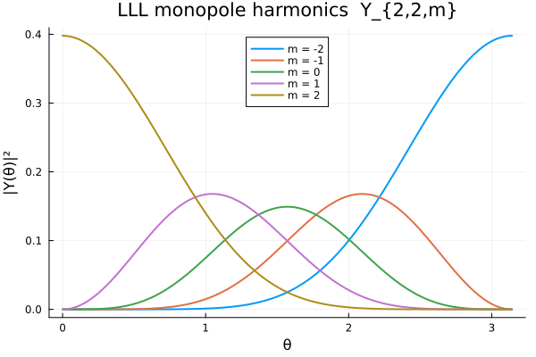

7. Under the hood: orbitals and symmetric polynomials
This last tutorial opens up the two ingredients the projected wavefunction is assembled from: the single-particle monopole harmonics, and the elementary symmetric polynomials (ESP) of the Jastrow vortex ratios. Understanding these makes the rest of the code transparent. See Physics background for the equations.
using CFsOnSphere
using Random
using LinearAlgebra
LinearAlgebra.BLAS.set_num_threads(1)
using Plots
gr()Plots.GRBackend()Monopole harmonics
calculate_ll(l, Q, θ, φ) returns the monopole harmonics $Y_{Q,l,m}(θ,φ)$ for all $m = -l,\dots,l$ at once. These are the orbitals of the unprojected determinant. Here are the lowest-Landau-level ($l = Q$) orbitals at $Q = 2$, plotted as $|Y_{Q,l,m}(θ,0)|^2$ along a meridian — each $m$ is a ring of latitude.
Q = 2 // 1
l = 2 // 1 # l = Q : lowest Landau level
θs = range(0, π; length = 200)
Y = [calculate_ll(l, Q, θ, 0.0) for θ in θs] # each entry is a length-(2l+1) vector over m
plt = plot(xlabel = "θ", ylabel = "|Y(θ)|²",
title = "LLL monopole harmonics Y_{2,2,m}", legend = :top)
for (idx, m) in enumerate(-l:l)
plot!(plt, θs, [abs2(Yθ[idx]) for Yθ in Y]; lw = 2, label = "m = $(Int(m))")
end
plt
Elementary symmetric polynomials
The projection's heavy lifting is contracting Wigner-D matrices with the ESP of the vortex ratios. get_symmetric_polynomials! fills dest[k+1] with the degree-$k$ ESP $e_k$ of the supplied roots. We can check it against the textbook definition: the $e_k$ are exactly the coefficients of $\prod_i (1 + r_i x)$.
roots = ComplexF64[0.3 + 0.1im, -0.5 + 0.2im, 0.7 - 0.4im, 0.1 + 0.6im]
b = length(roots)
esp = zeros(ComplexF64, b + 1)
get_symmetric_polynomials!(esp, roots, b)
# Ground truth: the eₖ are the coefficients of ∏(1 + rᵢ x), expanded directly.
function esp_direct(roots)
poly = ComplexF64[1.0]
for r in roots
poly = vcat(poly, 0im) .+ vcat(0im, r .* poly)
end
return poly
end
poly = esp_direct(roots)
println("degree e_k (package) e_k (direct ∏(1+rᵢx))")
for k in 0:b
println(rpad(k, 8), rpad(round(esp[k+1], digits=4), 26), round(poly[k+1], digits=4))
end
println("\nmax |difference| = ", maximum(abs.(esp .- poly)))degree e_k (package) e_k (direct ∏(1+rᵢx))
0 1.0 + 0.0im 1.0 + 0.0im
1 0.6 + 0.5im 0.6 + 0.5im
2 -0.08 + 0.59im -0.08 + 0.59im
3 -0.314 - 0.009im -0.314 - 0.009im
4 -0.0565 - 0.0615im -0.0565 - 0.0615im
max |difference| = 0.0The two agree to machine precision. In the projection the roots are the vortex ratios $(r_i^{-1}\!\cdot r_j)_S / (r_i^{-1}\!\cdot r_j)_A$ for $j \neq i$, and a regularized variant of the same routine divides $e_k$ by $\binom{N-1}{k}$ on the fly — that is the normalization $\tilde e$ appearing in the projection coefficient. From here, the projected orbital is just a Wigner-D-weighted sum of these polynomials, exactly as in Physics background.
This page was generated using Literate.jl.